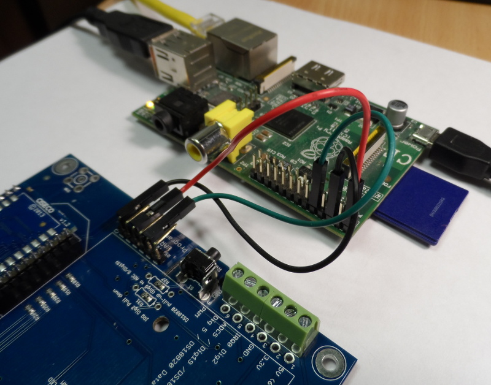
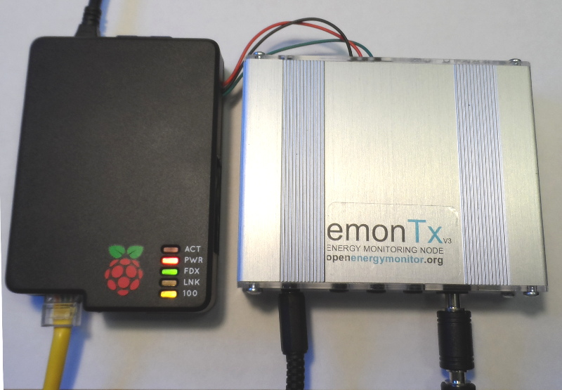

Hi,
I am in my final year at Loughborough University studying Industrial Design. One element of my final year project consists of redesigning a consumer unit/fuse box with built in energy monitoring. Its part of a project aimed at making consumers more aware of the cost of living and encouraging a positive behavioural change from home.
I am looking to:
- Monitor, archive and analyse energy consumption for every circuit in the house
- Visualize historical consumption data
- Access data remotely from the web
- Eventually include data from other sensors, like temperature, humidity, motion and light.
As far as I have worked out from the material on the site, the emonTx or emonTX Arduino Shield use the CT sensors to measure current and send this data wirelessly to a base station before then transmitting the data to a server via wifi (Emoncms).
I am presuming in most cases people have the base station nearer the homes wifi router (or at least separate/away from the sensors and emonTX board.) In my case, the wireless link between the emonTX (or the emonTX shield) and the base station does not need to be wireless. I am hoping simply to transfer the energy readings directly from the consumer unit via wifi.
Does this simplify or reduce the number of parts necessary at all? Can I combine the base station with the sensors?
Presuming I have a 4 way Consumer Unit (4 MCB’s) and wish to monitor the energy consumption of each circuit, could someone kindly confirm for me the hardware required to do this? Is there any advantage for using a Raspberry Pi rather than a Arduino for instance?
I have a reasonable understanding of Arduino, but am seeking some confirmation of the hardware before purchasing from your site.
Look forward to your reply!
Re: Industrial Design Student - Beginner
At the moment the standard setup is to use a raspberrypi basestation next to your internet router connected via ethernet and an emontx near your meter cabinet but there has been discussion of raspberrypi shield version of the emontx v3 which would be a neat solution for what you want.
Alternatively using the existing hardware you could connect an emontx to the raspberrypi via serial as in the picture below:
Both the raspberrypi and emontx v3 run at 3.3V so the serial RX and TX lines can connect ok. Im using the raspberrypi's 5V supply to supply the emontx with 5V power which is then rectified to 3.3V on board, 5V is provided by the red wire. The ground connection is the black wire and the data going from the emontx to the raspberrypi is the green wire. I havent connected a wire for data going the other way.

These resources may be useful:
reference design for the raspberrypi adapter board which connects via serial to the raspberrypi
http://wiki.openenergymonitor.org/index.php?title=RFM12Pi_V2#Design_Files_.26_Referance
RaspberryPi GPIO pinout:
http://www.cl.cam.ac.uk/projects/raspberrypi/tutorials/turing-machine/two.html
EmonTx v3 schematic
http://openenergymonitor.org/emon/sites/default/files/emonTxV3.2_sch.png
Il write this up as a piece of documentation, including a code example as it seems to be a common question
Re: Industrial Design Student - Beginner
Points:
1. Unless the base node is a Raspberry Pi fitted with the RFM12Pi receiver, which also functions as a server, the base node transmits via a wired Ethernet connection to a server running emonCMS. The server can be either on the LAN or WAN. Though some have done so, we generally tend not to use WiFi.
2. For accurate energy measurement, a voltage reference is required as well as current.
3. If you want to have the RPi doing the front-end measurements, then you need to add a means of reading several channels of analogue signals. and I think you might need to write the software for that from scratch too.
The basic hardware you'd need, if you do it the way that our system is designed to operate, would be an emonTx V3, one voltage adapter, 4 c.t's, one Raspberry Pi with RFM12Pi, a hard disk and the appropriate emonCMS image on SD card. If you dispensed with the voltage adapter, you could only have an estimate of apparent power, rather than an accurate measure of real power. If you are using a LAN (WAMP, MAMP, LAMP) server or emoncms.org, you can use either a RPi or NanodeRF as the base station, both Ethernet cabled to router.
Re: Industrial Design Student - Beginner
Here's a simple direct serial output sketch for the emontx v3 here:
https://github.com/openenergymonitor/emonTxFirmware/tree/master/emonTxV3/noRF/emonTxV3_DirectSerial
On the raspberrypi if you just want to forward the emontx data to a remote emoncms this can be done with the oem_gateway developed by Jerome which is on the standard rock solid forwarder image http://emoncms.org/site/docs/raspberrypigateway
Glyn wrote a blog about the oem_gateway configuration needed last week, have a look here: http://openenergymonitor.blogspot.co.uk/2014/01/oem-gateway-serial-port-emoncms-link.html
The main thing you need to add to the oemgateway.conf file is the serial listener config:
# This listener manages the serial [[Serial]] type = OemGatewaySerialListener [[[init_settings]]] com_port = /dev/ttyAMA0 [[[runtime_settings]]]Then add the location and apikey of the emoncms server your posting too in the buffers section.
Its worth noting that the standard emontx firmware which has all the rfm12b radio packet sending code also prints a space separated string to its serial port which should work the same as the cut down serial only example above although you will still be sending radio packets.
Re: Industrial Design Student - Beginner
Here's a picture of both units connected with their cases:
Pi case: http://shop.pimoroni.com/products/blackberry-case-for-raspberry-pi

Re: Industrial Design Student - Beginner
If your using a stock Raspbien image or any other image other then the OpenEnergyMonitor ready-to-go SD card images you will need to remove the internal UART port (ttyAMA0) which the RFM12Pi uses from the console so we can read from it. To do this follow:
To do this we need to access /boot/cmdline.txt which is mounded on a R/O partition, easiest way to do this is to insert the Pi's SD card in a computer and edit that file there. Remove the text that make reference to the UART i.e.
console=ttyAMA0,115200 kgdboc=ttyAMA0,115200
Then insert the SD card back into the Pi and edit initab
$ nano /etc/inittab
At the bottom of the file comment out the line (by adding a ‘#’ at beginning)
# T0:23:respawn:/sbin/getty -L ttyAMA0 115200 vt100
[Ctrl+X] then [y] then [Enter] to save and exit
The internal UART (ttyAMA0) is now free to use for the RFM12Pi
Re: Industrial Design Student - Beginner
Hi,
just saw your topic, if your are not limited or restricted to already available components you might want to take a look at my emonRPi fork which allows to measure 3phase current + power in just one housing and with 12bit resolution.
http://openenergymonitor.org/emon/node/3877
regards
Re: Industrial Design Student - Beginner
How far away can stay Raspberry and card Emontx?
Using a Cat 5e twisted pair cable to connect the two serial I can reach 40 feet away?
Thank
Re: Industrial Design Student - Beginner
@pacitzu hard to say exactly, RS232 would be the way to get longer distance. Reading about the web it sounds like you should get up to 10m from 3V3 UART out of a twisted pair. http://electronics.stackexchange.com/questions/93076/maximum-distance-for-avr-uart-on-3-3v
Re: Industrial Design Student - Beginner
Thank you all - very helpful!
Having best digested your responses and weighed this up against my soon approaching deadline and of course technical knowhow, to me it makes sense to try and build the solution proposed by you, TrystanLea. The RPi and emonTx connected together looks like a great workaround (using an ethernet port), i will look into adding wifi if time allows.
In other news, I am hoping to design a custom housing packing both the emonTX and RPi into a 3D printed consumer unit prototype I am working on, so will probably not need the cases kindly linked.
I will go ahead and purchase the following:
- emonTx V3,
- voltage adapter,
- 4 CTs
- Raspberry Pi with RFM12Pi
I’ll then try and get my head around the appropriate emonCMS image on SD card.
Can anyone confirm for me if:
- the hard drive acts as a local server? Any idea how much space will be necessary?
- the emonCMS server provides a visual representation of the data recorded?
- there is any advantage to using a RPi over the NanodeRF as my base station?
Also in terms of future expansion of the project, can anyone put me in the direction of thread/someone that has explored wirelessly sending the data from the base to the server?
Thanks!
Re: Industrial Design Student - Beginner
I think you need to do more reading ;-)
If you are linking the EmonTx to the RPi directly (wired) you won't need the RFM12Pi.
- the hard drive acts as a local server? Any idea how much space will be necessary?
Yes, depends on how many feeds and time duration you want. But basically any 3.5 inch hard disk you buy will me more than sufficient. Just don't go for a solid state disk.
- the emonCMS server provides a visual representation of the data recorded?
Yes, it can do graphs too!
- there is any advantage to using a RPi over the NanodeRF as my base station?
The NanodeRF can't run the EmonCMS server software
Re: Industrial Design Student - Beginner
Hi,
this is great - exactly what I'm after.
Can't seem to get it working though - As far as I can see I've done everything outlined above, the only difference being I'm using a v2 arduino shield rather than a v3 EmonTx - is this a problem?
I've connected the 5V, GND and shieldTX--RPiRX with a 30cm length of old telephone wire.
I'm running the rocksolid forwarder on the RPi and I'm running ShieldCT_1234_Voltage
My arduino sketch is spitting out a space seperated line of data - I've confirmed this on my laptop in the Arduino serial monitor (plus the tx l.e.d is flashing on the arduino)
I've then added the serial listener to the oemgateway conf file, along with my read&write APIkey. I've also commented out the radio and socket listeners.
When I kill then run the python script it seems to open the port but no data is coming through. Obviously nothing is coming through to emoncms either.
Any thoughts?
Many thanks
Re: Industrial Design Student - Beginner
Break the problem down into chunks.
Install minicom, kill any processes using the serial port, and then use minicom you should see the traffic passing through the serial connect to the Pi. This will show that the data is arriving on the pi. If you know data is or isn't arriving on the Pi you know where to focus your energies.
Either using serial out on the arduino to see if data is being transmitted or on the script on the Pi.
Re: Industrial Design Student - Beginner
Hi rushed
You do not need a logic level converter to connect the serial interface of the raspberry with the arduino?
Arduino with emontx shield works at 5v and raspberry at 3.3v
Re: Industrial Design Student - Beginner
Is it possible to add more then one emonTx v3 to this serial port. What kind of serial port is it?
Thanks for your help